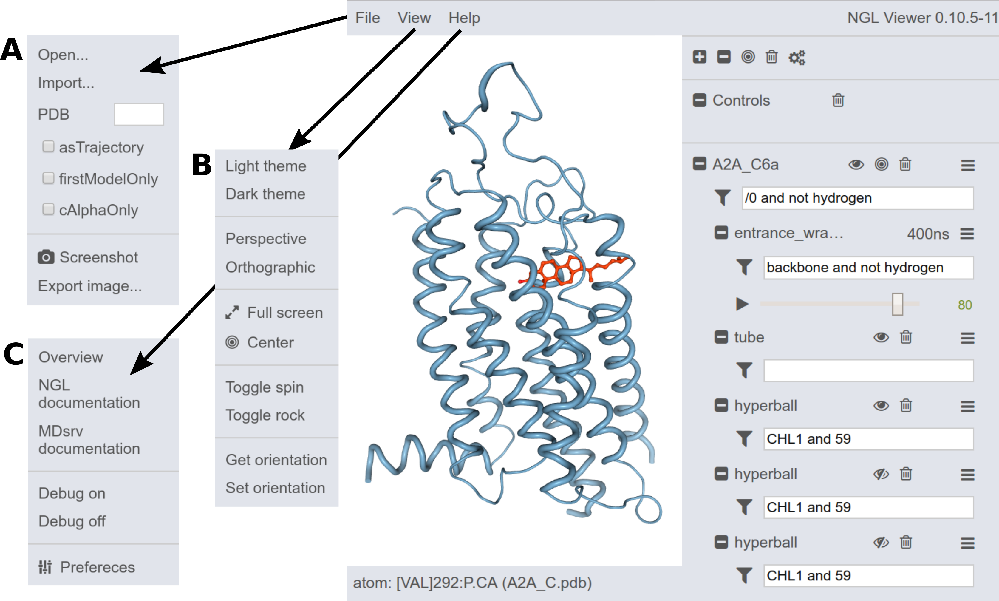

Local usage
Within a local environment, for short-time usage or testing, the MDsrv can be started from a directory providing access to files within this and underlying directories by the following command:
> mdsrvpositional options: [structure] [trajectory]
additional options: [--script SCRIPT] [--cfg CFG]
[--host HOST] [--port PORT]The command "mdsrv" itself starts the MDsrv including the NGL viewer with access to files within the starting directory and underneath, exclusively. By executing the MDsrv with a structure (e.g. a .gro or .pdb file) and trajectory (e.g. a .gro, .xtc or .dcd file) including their path which must be within the current working directory or a sub directory, both will be loaded into the MD viewer.
> mdsrv 3DQB.gro sims/3DQB.xtc <-- working
> mdsrv 3DQB.gro ../../3DQB.xtc <-- not working (parent directory not accessible)
A structure file is mandatory for loading a trajectory. Trajectories and structures within the current working directory can still be loaded afterwards via the GUI.
MDsrv uses .ngl/.js script files to load structures and trajectories with specific settings (e.g representations, colors, selections or background scheme), orientations or self-coded functions. The file is further explained below and example code can be found in the scripting section.
mdsrv --script session.ngl
mdsrv --script session.js
The .ngl file is written in JavaScript and contains commands to execute predefined settings and functions. A sample .ngl file shows additional options like functions and basic loading commands. This is recommended if simulation sessions should be shared. The location of this file should be within an accessible directory and can then be loaded via the URL (e.g. http://localhost/mdsrv.html?load=file://MDsrv/example.ngl, where MDsrv is the directory defined within the .cfg file). Further information and example code can be found in the scripting section.
To include other directories and security settings, the configuration file (.cfg, explained in the configuration section) can be loaded accordingly:
mdsrv --cfg my.cfg
mdsrv --configure my.cfg
System wide/web-server usage
To maintain MDsrv as a system wide web-server, follow the deployment instructions. Besides apache, any webserver with wsgi support can be used (not tested).
We provide an example of the usage of the MDsrv as a web-server in combination with the NGL viewer. An embedded example is used in this documentation. By utilizing a web-server, collaborators, reviewers or students can easily inspect simulations visually on-the-fly.
NGL GUI guide
Loading simulations
Simulations can be loaded in several different ways into the NGL GUI. To load simulations into the NGL viewer, a structure file has to be provided first. Structure and .ngl scripting files can be loaded by drag&drop into the viewer or by browsing through the folders by clicking File --> Import (A, B, C).
Within the structure menu, several trajectories can be imported via Trajectory import for autoloadable trajectories (currently dcd files supported, xtc under development) or Remote trajectory --> Import for deposed trajectories (D, E).
If you want to load a trajectory containing already all atomistic information (e.g. .gro trajectories), select File --> as trajectory (A, B) before loading the file. This flag is set until it is removed. Then load the file as previously described via drag&drop or through the folders.
Simulation settings
The content of the simulation can be specified through the filter selection (e.g. "protein and not #h"). Within the trajectory menu (F), the simulation can be further adjusted (e.g. centering, superposing, removing PBC, step sizes or play options).
More
If you have questions, feel free to use the Issue Tracker or write a mail to johanna.tiemann@gmail.com or alexander.rose@weirdbyte.de.
Please give us feedback!